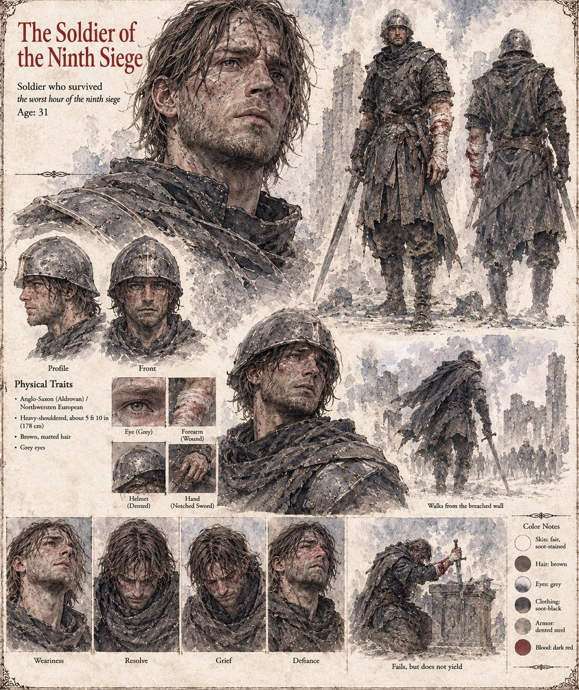

The Soldier of the Ninth Siege
Soldier who survived the worst hour of the ninth siege · 31 years old
A soldier who survives the worst hour of the ninth siege and, still bleeding from a wound he has let no one dress, walks directly from the breached outer wall to the plinth hall while the fighting still echoes behind him. He carries the blood-warmed conviction that a man who has just proven his courage to himself has surely proven it to whatever else might be watching. Valeria does not stir for him either. He stands over her for a long moment in the ringing quiet of a hall that has just stopped being a battlefield, understanding, with a clarity the adrenaline makes almost gentle rather than bitter, that surviving well is not the same accomplishment as wanting nothing: in the hour just past he has wanted a great deal, every reasonable thing a man facing death is entitled to want, and none of it, however honorable, is the kind of empty the plinth was ever built to measure.
The sheet gives his age as 31 and draws him heavy-shouldered, about 5'10", with matted brown hair, grey eyes and soot-stained fair skin, in a soot-black torn gambeson and a dented steel helmet, a bloodied cloth bound round his forearm and a notched sword in his hand. Its expressions are weariness, resolve, grief and defiance, and its panels show him walking away from the breached wall and kneeling at the plinth, captioned Fails, but does not yield. The manuscript gives him the undressed wound and nothing else. The sheet's culture line reads Anglo-Saxon (Aldrovan).